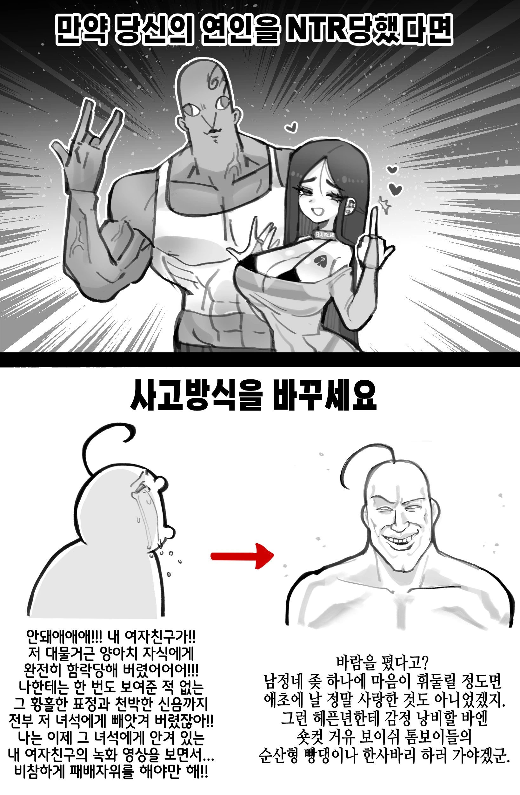

상남자특

상남자특
엄마가 거근 남동생에게 NTR
에미..!
이게 한국어가 맞음?
mtr 아시는구나!
세트가 자야 따먹으니 라칸이 세트 엄마 따먹는 야짤 있긴함
뭐야 이거 내 비밀레시피였는데
흑인 "그럼 이 세상 모든 히로인을 NTR해주겠다!"
-너를 너무너무너무너무 좋아하는 40억명의 그녀 1화 end

어차피 내가 당하는게 아닌데 그냥 새로운 남자친구와의 순애라고 생각하라고ㅋㅋ
Ntr 당하면 진실된 사랑을 찾았구나하고 축복해주는게 씹상남자아님?
금태양쪽이 순애 아닐까..?
저 비참한 패배 자위가 얼마나 도파민이 오를지 감도 안온다
흑흑 내 앞에서는 그런 신음소리를 낸 적이 없으면서…!!! (탁탁탁)
결론이 왜이래.
이작가 톰보이 되게좋아하나보다
네 사랑따위 거물 자지보다 못했다는 의미잖아
그런 당신을 위한 엄마 NTR